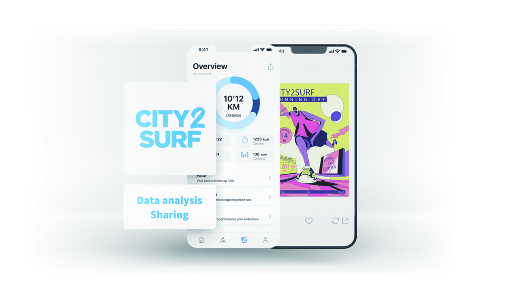

Read the race
Pace, heart rate and key race information are brought into a post-race overview. The interface is designed to make the result understandable at a glance.
A race ends.
The story continues.
A post-race experience for the City2Surf virtual run: turn pace, heart rate and race insights into a clearer personal story, then create a visual record worth sharing.

The app brings performance data and celebration into the same flow. An overview helps a runner understand the race, while a poster-generation concept gives those results a more personal form.
Pace, heart rate and key race information are brought into a post-race overview. The interface is designed to make the result understandable at a glance.
Race insights connect individual data points with the broader experience of the run, moving from isolated measurements toward a readable account.
An AI-powered poster concept transforms the result into a visual keepsake. The portfolio presents the interface direction, without claiming a live event integration.